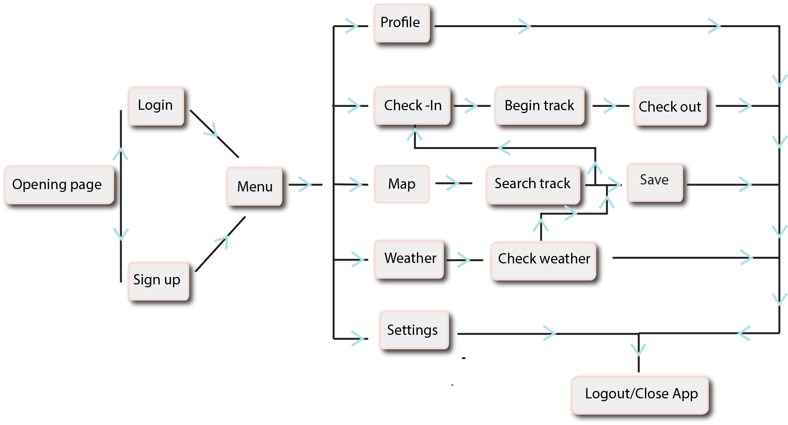

CHECK - Check is a simple and easy-to-use app that can be used by anyone! Check allows you to discover all walking tracks in Wellington!
This app helps you explore Wellingtons tracks whilst keeping you safe, on track and oragnise. This app gives you the option to browse the map of Wellingon and showing you all the walking tracks avaliable, both popular and hidden tracks! You create your own profile and you can check in and out of a track, and it will also show you how many people have currently checked into the track! It gets busy, especially when the weathers great!
Creating a profile allows you to keep a record of how many tracks you've completed and you can also save tracks for the future!
Check provides safety for yourself. If you are exploring a new track, the GPS feature will give you directions and keep you on track. The GPS will work even without internet connection!
Menu Page
The menu page consist of your Profile, The Map, Check-in, Settings and Weather
Profile
Your profile allows you to keep track of how many tracks you've completed and your saved tracks.
Settings
Settings allows you to change profile and notifications settings. You can also change the language and country.
Map
The map allows you to explore all of Wellington's tracks. If you click on an icon, it will provide small details of the track - Name, brief description, track difficulty and duration.
Check In
The check-in page allows you to see how many people have currently checked into the track. Once you are ready to start the track, you simply check-in and go! Clear and easy!
GPS
Once you start the track, you are given directions incase you're not familiar with the track. It will keep you on track and you can monitor how long you've got left. You can also use this without wifi.
Check Out
Once you've completed the track, you will need to check-out
Weather
When going on a track, weather plays a very important app hence why I haved added it.
Weather
It displays the weather forecast for the next 5 days so you can plan ahead.
Colour Option 1
It displays the weather forecast for the next 5 days so you can plan ahead.
Colour Option 2
It displays the weather forecast for the next 5 days so you can plan ahead.
Colour Option 3
It displays the weather forecast for the next 5 days so you can plan ahead.
User Journey Map
This is a basic user journey map and shows how the user could interact with the app
Colour Pallette
I picked 5 very simple colours. I wanted to add a pop of colour to the app, so I also added a light blue and pink.
I wanted to ensure that the colours weren't going to overpower any feathers of the app.
There is also an option to change the colour theme of the app. The three options are shown above.